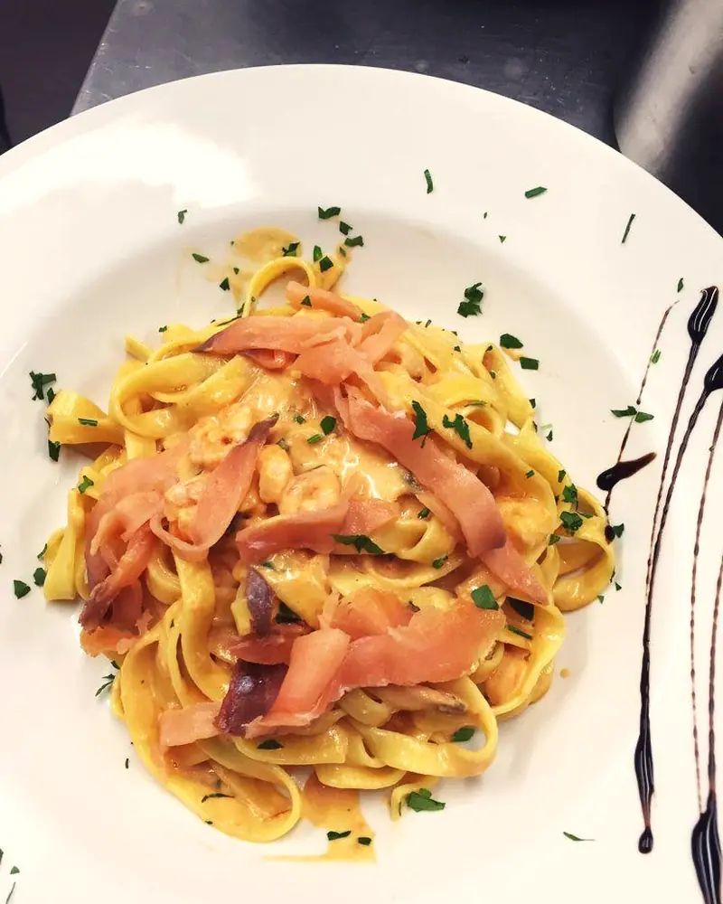
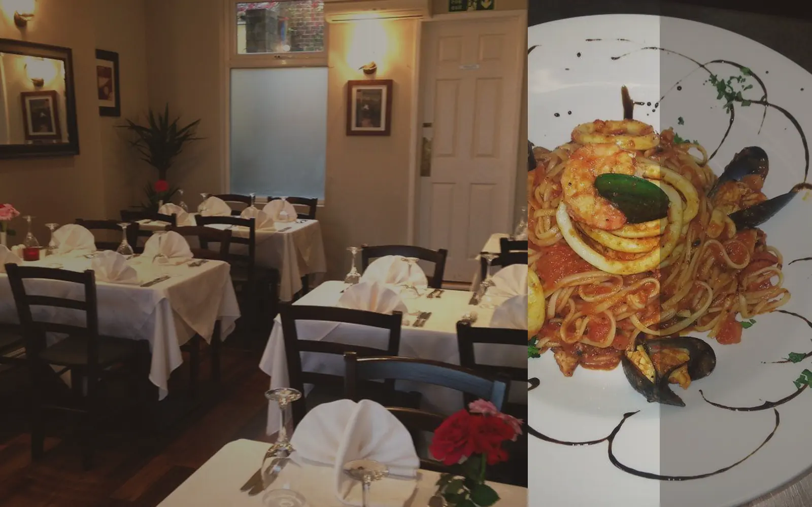
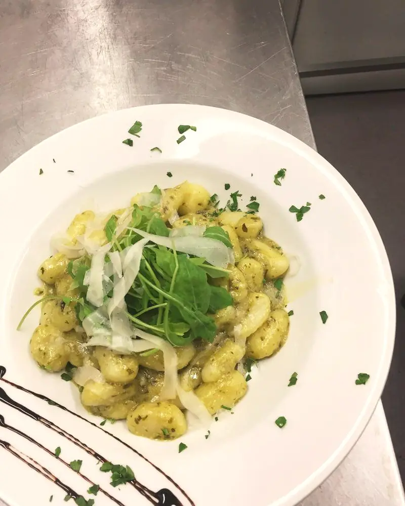
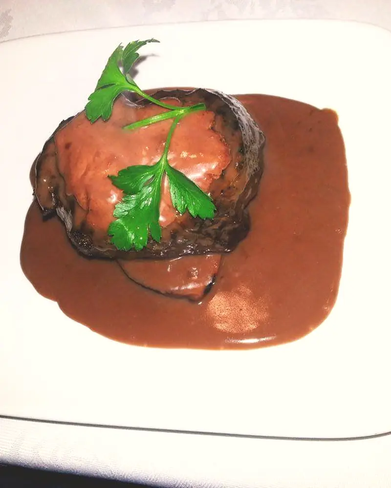
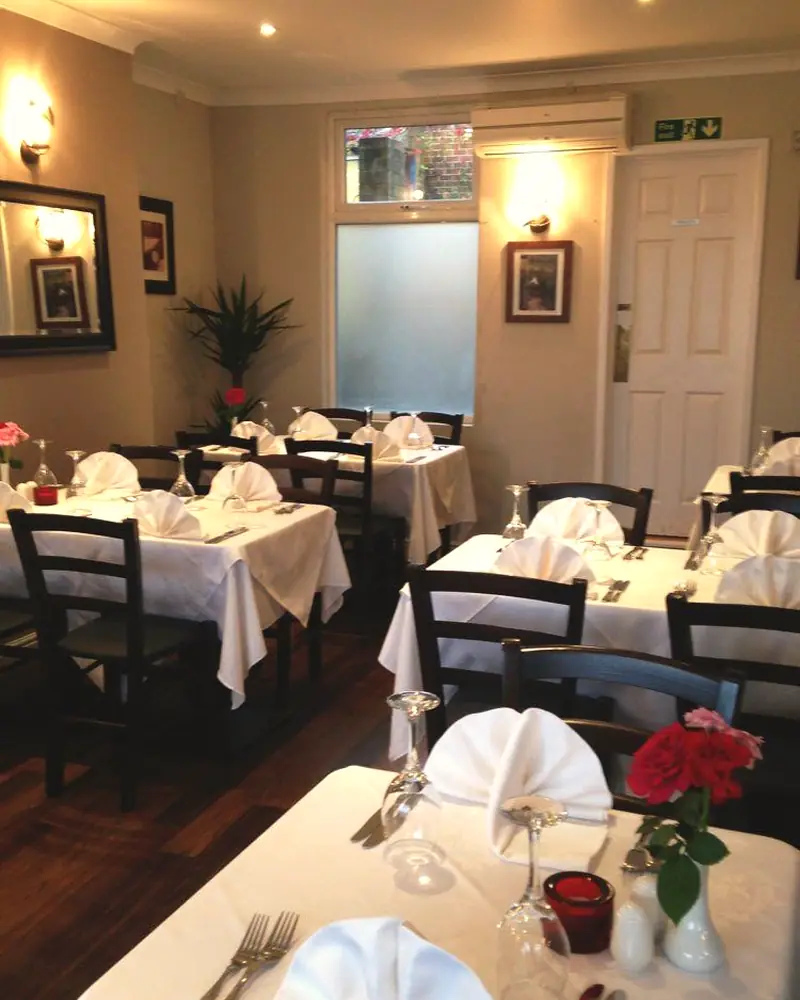
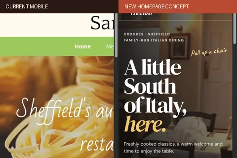
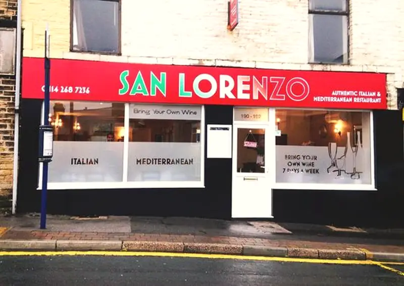

01Pasta
Twirl-worthy, finished to order.

Pull up a chair
Freshly cooked classics, a warm welcome and time to enjoy the table.
Pasta, fish and steak—freshly cooked with the generous spirit of Southern Italy.

01Twirl-worthy, finished to order.

02Soft, comforting, properly sauced.

03A generous plate for a long evening.

Our head chef was born, raised and trained in Southern Italy. That experience comes to the table in honest classics cooked fresh.
Stay for one more course ↗
A compact mobile comparison focused on readability, appetite and the route to booking—not a second hero.

